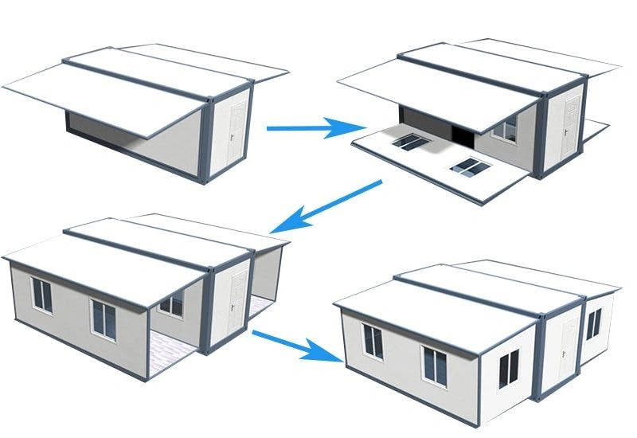
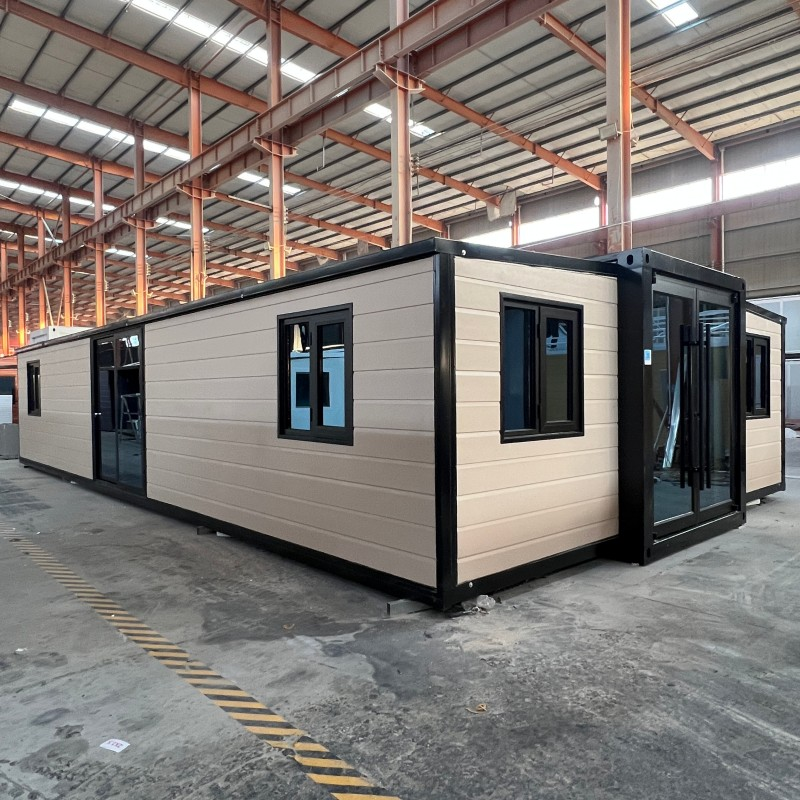
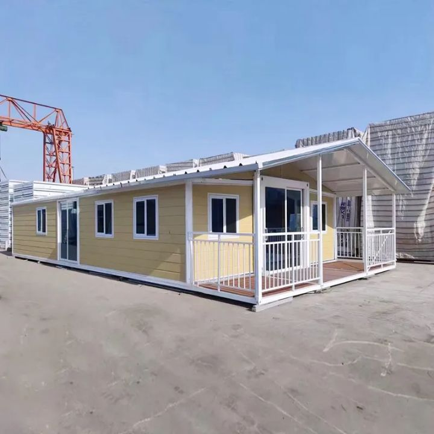

Uma planta para cada forma de viver.
Do T0 aberto às opções com quatro quartos. Todas as sete plantas fornecidas incluem uma casa de banho.
Explore o espaço. Escolha os materiais. Dê-lhe a sua identidade.

Arraste para olhar · WASD ou setas para andar
Altura de observação: 1,60 m (navegação)
A imagem começa com as coberturas já abertas. O estado totalmente fechado foi confirmado pelo cliente.
Ordem confirmada pelo cliente: fechado, alas laterais, paredes laterais, frente e traseira. Painéis solidários aos pisos na abertura, depois erguidos. Arrumação interna e articulações ilustrativas; não é uma simulação de fabrico. Telhado adicional, alpendre e interiores omitidos durante o processo.

O espaço que imagina.
As referências que o inspiram.
Um módulo central e duas alas expansíveis. Sete distribuições para pensar a sala, os quartos e a forma como quer usar a sua casa.
Compare referências reais e veja a sua combinação no modelo 3D. O exterior, o pavimento, a cozinha e a casa de banho têm escolhas independentes.
Do T0 aberto às opções com quatro quartos. Todas as sete plantas fornecidas incluem uma casa de banho.
51 referências de exterior, 12 pavimentos SPC e oito revestimentos UV para o banho, extraídos do catálogo original.
15 cozinhas e 17 ambientes de banho de referência. Explore bancadas, móveis, torneiras e resguardos em detalhe.

Explore o telhado triangular e o alpendre coberto como opções adicionais. Veja os volumes no configurador e compare a casa com e sem estes elementos.
Geometria interpretada da fotografia. Medidas e adequação à unidade a confirmar na proposta.
Comece com o contentor fechado. Abra as alas laterais, erga as paredes com as janelas e acompanhe a abertura da frente e da traseira. A sequência é contínua e pode ser pausada ou explorada em qualquer posição. A ordem segue a explicação do cliente; a arrumação interna e as articulações são ilustrativas.
Planta, fachada, pavimento, referência e implantação de cozinha, ambiente e distribuição da casa de banho, telhado e alpendre. A combinação seleccionada fica guardada neste dispositivo e pode ser exportada.
72 m² é a designação comercial. As plantas indicam 11,80 × 6,22 m, equivalentes a um rectângulo exterior de 73,396 m². A área útil certificada não consta dos anexos; as áreas interiores apresentadas são estimativas.
Guarde o resumo em PDF com planta, materiais e referências. A Green Village poderá confirmar a compatibilidade, os equipamentos incluídos, transporte, instalação e preço final na proposta comercial.
O 3D é um modelo de apresentação reconstruído das plantas e fotografias. As amostras digitais vêm do catálogo; a luz e o ecrã alteram a percepção da cor. Medidas interiores e detalhes não cotados são estimados. Instalações e mecanismo exacto de expansão aguardam documentação.
Imagens do modelo 3D em 3 840 × 2 160 píxeis. Abra uma vista, guarde-a em 4K ou experimente a configuração representada.
Imagens geradas a partir da mesma geometria e dos mesmos materiais do configurador, com iluminação de apresentação em tempo real. Dimensões não cotadas e escala física dos padrões estimadas. As fotografias originais estão disponíveis em separado.
Plantas originais do ficheiro fornecido.
11 800 × 6 220 mm · uma casa de banho em todas as opções.
O desenho e o modelo 3D usam os mesmos limites, vãos e equipamentos. Cotas exteriores confirmadas; áreas interiores calculadas com espessuras assumidas.
As plantas não identificam a cozinha. As cozinhas do estúdio são propostas de implantação. As medidas exteriores correspondem a um rectângulo de 73,396 m²; a área útil não está indicada. “72 m²” é a designação comercial utilizada neste portefólio.
Descarregar plantas originais ↓ XLSXFotografias fornecidas para referência.
Os acabamentos e equipamentos variam entre imagens.
Visita de referência em Full HD.
Todos os vídeos sem áudio, incluindo os downloads.
Visita T2 com cozinhas e ambientes de banho do catálogo. Consulte o configurador para a distribuição e as portas actualizadas.
14 segundos da elevação longitudinal de dentro para fora. Registo da revisão R9; cobertura translúcida para observar ambas as paredes. Eixo e folgas ilustrativos, topos e interior omitidos.
Explore os vídeos sem áudio ou vá directamente ao piso, às paredes e aos equipamentos. Os vídeos apresentam diferenças de acabamento e distribuição.
Resolução e conteúdo identificados em cada vídeo original.
Medidas confirmadas, hipóteses identificadas
e evidências da revisão.